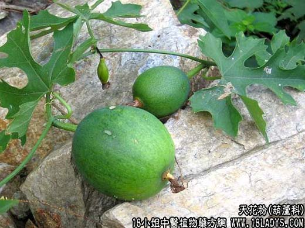

【中药大全】
天花粉为葫芦科草质藤本植物栝楼的块根。苦、微甘，寒。归肺、胃经。
1．热病伤津：用于热病津伤所致的心烦口渴及肺热燥咳，能清热生津，如（<沈氏尊生>滋燥饮）。
2．止渴生津：用于热病津少口渴，消渴等症，颇有疗效，如（天花散）、（沙参麦冬汤）、（<医学衷中参西录>玉液汤）。
3．消肿排脓：用于热毒疮肿，常与金银花，白芷，赤芍等；清热解毒、活血消肿等，如（仙方活命饮）、（<外科全生集>清暑汤）。
【药效鉴别】
天花粉清热力强，甘寒滋润生津为优，消肿排脓治外痈为主。而芦根性平力缓，绝无伤正之弊。且能清清肺而止咳，又能清胃而止呕能宣，能养能降。
【药理作用】
天花粉煎剂在体外对多种致病性杆菌及溶血性链球菌、肺炎双球菌等有不同程度的抑制作用。
【化学成分】
含多量淀粉及皂甙，尚含蛋白质、多种氨基酸及糖类。
【用量用法】
10——30g，水煎服。或入丸、散剂。外用适量。
【使用注意】
凡脾胃虚寒，大便滑泻者忌。不宜与乌头、附子同用。
本文解释权归中药大全，本文地址： https://www.daquan.com/post/1829.html